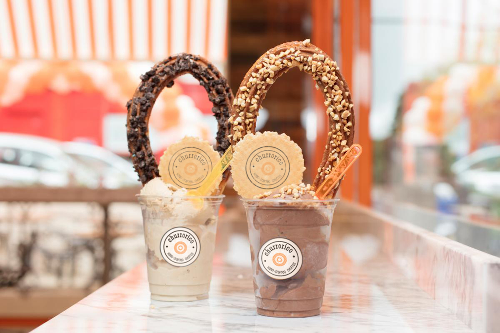
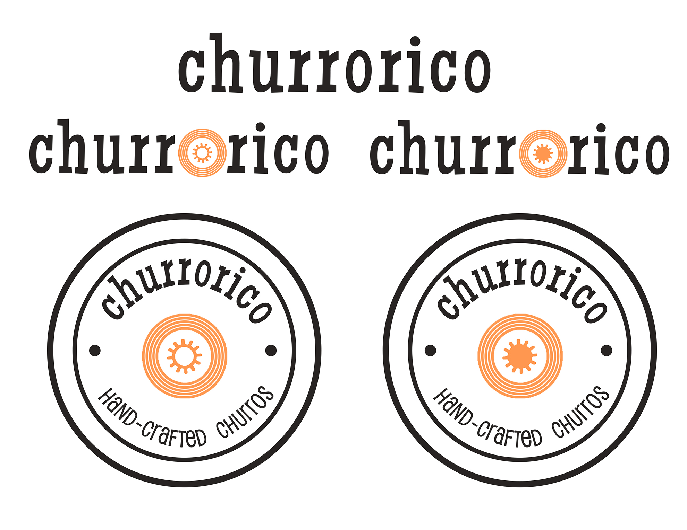
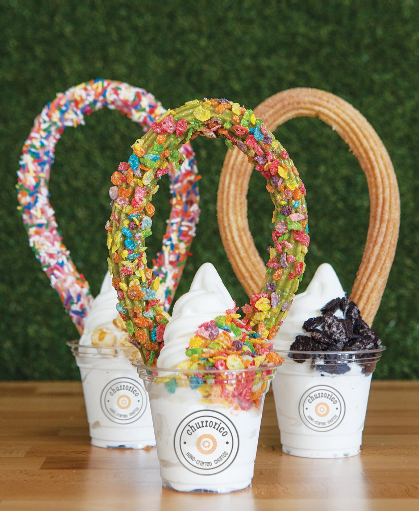

Churrorico

Brand development for Churrorico of Los Angeles. Logo designed with emphasis on clean and playful visuals that appeal to upscale clientele. Photographs first provided by Churrorico then logos are edited in via Photoshop by myself.
(Raymond Lam, Photoshop, Illustrator, 2019)

Churrorico Logos

Key Visual 2